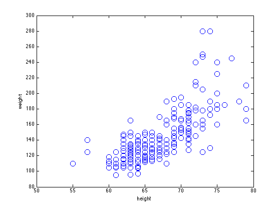
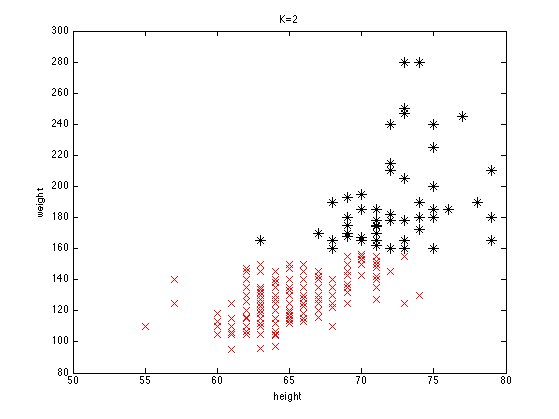
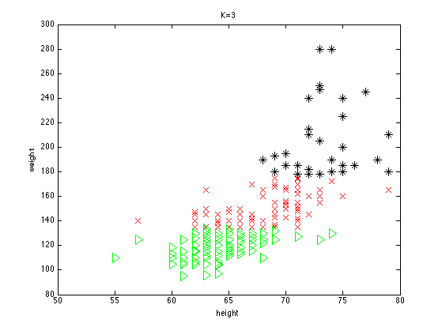

K-means clustering for Height Weight data
rawdata = loadData('heightWeight');
X = [rawdata(:,2) rawdata(:,3)];
[styles, colors, symbols] = plotColors();
plotArgs = {'linewidth', 1.5, 'markersize', 10};
figure();
plot(X(:, 1), X(:, 2), [symbols(1), colors(1)], plotArgs{:});
printPmtkFigure('heightWeightScatterNoLabels');
xlabel('height'); ylabel('weight')
axis([50 80 80 300]);
setSeed(1);
Ks = [2 3];
for ki=1:length(Ks)
K = Ks(ki);
[mu, Z] = kmeansFit(X, K);
figure;
for c=1:K
ndx = Z==c;
marker = [symbols(c+1), colors(c+1)];
plot(X(ndx, 1), X(ndx, 2), marker, plotArgs{:});
hold on;
end
box on;
axis([50 80 80 300]);
xlabel('height'); ylabel('weight')
title(sprintf('K=%d', K));
printPmtkFigure(sprintf('heightWeightKmeans%d', K))
end
placeFigures();
  